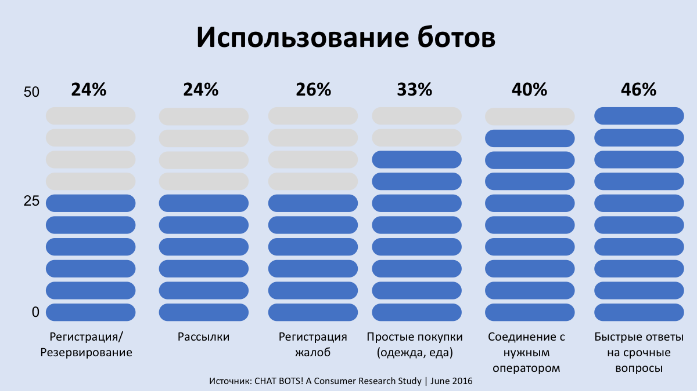
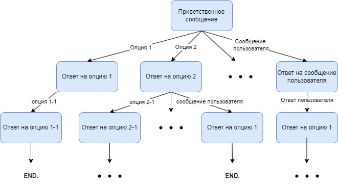
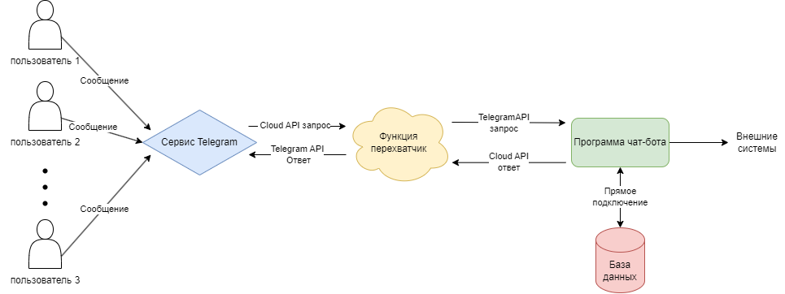

Технология разработки чат-ботов с использованием облачных технологий
Авторы: А.Н. Ширко, А.В. Харченко
Учебное заведение: Кубанский государственный университет
Ключевые слова: чат-бот, мессенджеры, Python, Telegram, облачные сервисы
Аннотация
В работе исследуются основные причины использования чат-ботов в различных сферах деятельности, а также их функциональные возможности. Рассматриваются преимущества использования облачных технологий, а также методологию разработки чат-ботов, построенных на облачных технологиях.
Процесс развития компьютерных технологий и интернета неразрывно связан с преобразованием формата общения между людьми, который всё больше принимает «дистанционную форму». На данный момент только мессенджером Telegram пользуются свыше 55 миллионов человек, и это число продолжает расти. Данную тенденцию не могли не заметить предприятия, работающие с клиентами, что открывает возможность расширить охват аудитории с помощью чат-ботов.
Чат-боты представляют собой программы, интегрированные в пользовательский интерфейс мессенджера и способные обрабатывать заранее заданные сценарии диалога с пользователем. Они получили широкое распространение во всех сферах деятельности, так как появляются всё новые возможности их разработки, даже без необходимости писать код вручную.
Основные направления использования чат-ботов
Говоря о причинах актуальности чат-ботов, выделяются следующие направления:
- Чат-боты ассистенты – помогают пользователю достичь конкретной цели, исполняют роль помощника при заполнении веб-форм и имеют примитивный функционал.
- Спам-боты – предназначены для рассылки пользователям интересующей их информации, выступая в качестве «создателя контента».
- Q&A боты – реализованы по принципу «один вопрос – один ответ», используются магазинами и маркетплейсами для поддержки пользователей и создания обратной связи.

При расширении инфраструктуры и функционала сервисного приложения неизбежно растут расходы на его поддержку. С каждым новым пользователем проверяется устойчивость программы. Такие проблемы часто возникают при использовании классических приложений, но могут быть минимизированы с помощью облачных технологий.
Облачные сервисы дают возможность гибкой настройки и управления инфраструктурой. Виртуализованные приложения легко модифицировать: увеличивать количество серверов, GPU, RAM и т.д. Эти настройки можно автоматизировать под текущие нужды проекта.
Преимущества использования облачных технологий
- Экономия бюджета – особые тарифы провайдеров снижают расходы на работу приложения, так как затраты зависят от потребляемых ресурсов.
- Безопасность – большинство облачных решений используют двухфакторное шифрование, обеспечивая высокий уровень защиты.
Использование чат-ботов, построенных на облачных технологиях, сокращает расходы на поддержку программ и расширяет возможности модификации и создания функционала благодаря пользовательским библиотекам.
Пример реализации Telegram чат-бота на Yandex Cloud
Основной функционал строится по формату «дерева ответов», где на каждое действие пользователя заранее прописан ответ с использованием библиотеки TelegramBotAPI.

«Облачная часть» приложения представляет собой сервис-перехватчик, который обрабатывает запросы до их поступления к основному боту. Yandex Cloud предоставляет доступ к созданию «облачных функций», где программист разворачивает функционал. Перехватчик (handler) проверяет легитимность запроса перед исполнением основной части программы.

Эта схема позволяет избежать ошибок на ранней стадии разработки и сокращает нагрузку на основную часть программы, фильтруя некорректные запросы и экономя ресурсы.
Библиографический список
- Yandex Cloud Documentation [Электронный ресурс] (дата обращения: 25.02.2024)
- Python Telegram Bot Documentation [Электронный ресурс] (дата обращения: 27.02.2024)